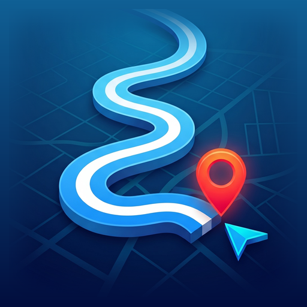

MAFNAV · خرائط MAF
حذف حسابك وبياناتك
من داخل التطبيق (الأسرع)
- افتح تطبيق MAFNAV.
- اضغط على أيقونة الحساب.
- اختر «حذف الحساب» وأكّد.
يُحذف الحساب فوراً من التطبيق، وتُمحى كل بياناته من خوادمنا خلال 30 يوماً كحد أقصى.
دون التطبيق
أرسل رسالة إلى abo.almez1990@gmail.com بعنوان «حذف حساب MAFNAV» من البريد نفسه المرتبط بحسابك في Google أو Apple. سنؤكد الحذف خلال 30 يوماً.
ما الذي يُحذف
- الحساب (الاسم، البريد، ربط Google أو Apple)
- الأماكن والقوائم والمسارات المحفوظة
- سجلّ البحث والرحلات
- رموز الإشعارات وتفضيلاتها
ما الذي يبقى
- بلاغات الطريق التي أرسلتها، كملاحظات مجهولة الهوية لا ترتبط بك.
- إحصاءات المرور العامة التي لا تخص أحداً.
إن استخدمت التطبيق كضيف دون حساب، فيكفي حذف التطبيق أو مسح بياناته من إعدادات الهاتف.
Delete your account and data
In the app (fastest)
- Open MAFNAV.
- Tap the account icon.
- Choose "Delete account" and confirm.
The account is removed from the app at once, and all its data is erased from our servers within 30 days at most.
Without the app
Email abo.almez1990@gmail.com with the subject "MAFNAV account deletion" from the email address linked to your Google or Apple sign-in. We confirm the deletion within 30 days.
What is deleted
- The account (name, email, Google or Apple link)
- Saved places, lists and routes
- Search and trip history
- Notification tokens and preferences
What is kept
- Road reports you sent, as anonymous observations not linked to you.
- General traffic statistics that are not about anyone.
If you used the app as a guest without an account, uninstalling the app or clearing its data in the phone's settings is enough.